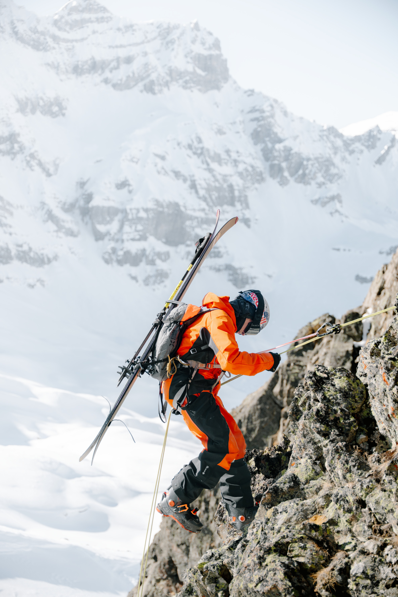

01 / ŹRÓDŁOInstagram / DWY4Ww8jF6E
01 / STORYMAMMUT / FREERIDE
Góry nie wybaczają
naiwności.

We współczesnym świecie ryzyko stało się słowem wyklętym, czymś, co należy wyeliminować za wszelką cenę. Ale w wysokich partiach gór czy w głębokim śniegu ryzyko jest nieodłącznym elementem krajobrazu. Nie da się go zignorować, można się na nie jedynie przygotować.
Mammut nie sprzedaje obietnicy bezstresowej jazdy. Mówimy wprost: „Risk is always there. Be prepared for it.”
Pozycjonujemy się jako partner, dostawca rozwiązań i narzędzi, które dają człowiekowi ochronę, by działać więcej i mocniej podejmując tylko kalkulowane ryzyko.